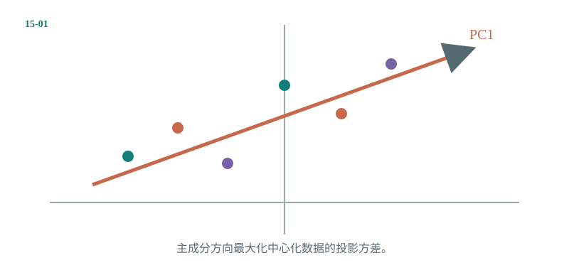
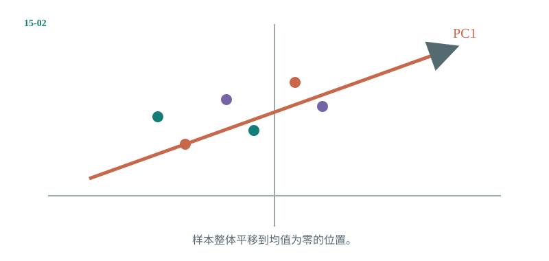
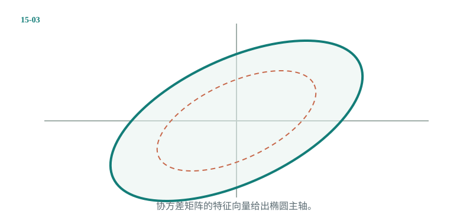
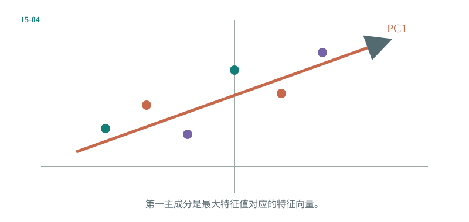
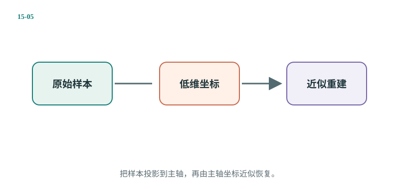
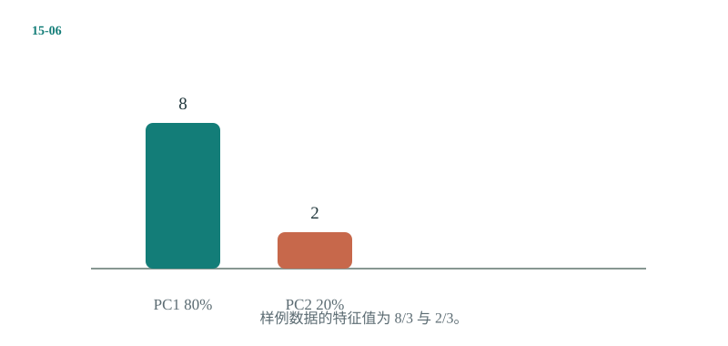
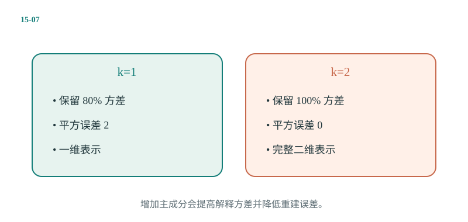
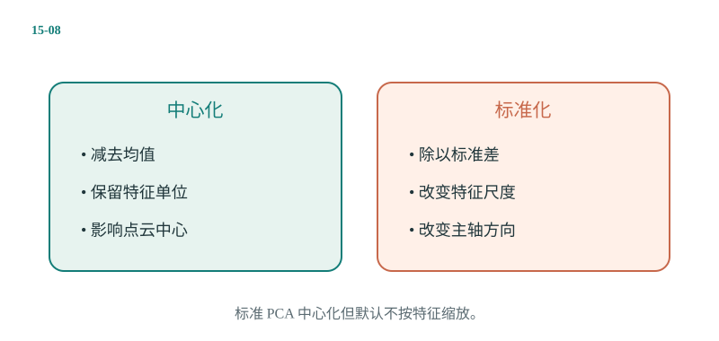

PCA：找到数据变化最大的方向
一团二维数据看起来沿某个斜方向拉长。PCA 要做的事，是找到这个方向，并把数据投影到更少的坐标上。
01数据云有一个“最宽”的方向
把每个样本看成平面上的一个点。若点沿某个方向分布得更宽，把数据投影到这条直线上，通常能保留最多的平方偏差。PCA 把这个直觉变成一个精确优化问题。
第一主成分是使投影方差最大的单位方向；第二主成分在与第一方向垂直的条件下，最大化剩余方差。

02先中心化：去掉整体位置
PCA 关注样本围绕均值的变化，而不是数据整体位于坐标系的哪里。设 X 的每一行是一个样本，先计算特征均值 μ，再对每一行减去 μ，得到中心化矩阵 Xc。
如果不中心化，第一主方向可能主要指向数据均值，而不是数据围绕均值的最大变化方向。

03协方差矩阵记录每个方向的变化
对 n 个中心化样本，样本协方差矩阵 C=XcᵀXc/(n−1)。它是对称半正定矩阵；对任意方向 v，vᵀCv 就是投影分数的样本方差。
因此最大化投影方差，等价于最大化 vᵀCv 且满足 ‖v‖=1。根据 Rayleigh 商，最优方向是最大特征值对应的单位特征向量。

04特征向量给出主轴，特征值给出方差
对 C 做特征分解，最大特征值 λ₁ 对应第一主成分 v₁。第二特征向量与 v₁ 正交，对应第二主成分。若特征值相等，主方向并不唯一。
本例使用四个中心化点：±2u₁ 与 ±u₂，其中 u₁=(√3/2,1/2)，u₂=(−1/2,√3/2)。样本协方差的特征值是 8/3 与 2/3。

05投影与重建：降维不是随便删坐标
把中心化样本 x 投影到前 k 个主方向，得到低维坐标 z=Vₖᵀx。若要近似恢复到原空间，则使用 x̂=Vₖz。投影会丢失被舍弃方向上的分量，但保留方向上的坐标。
本例只保留第一主成分时，解释方差比例为 80%，被舍弃方向的总平方重建误差为 2；保留两个主成分则完整恢复四个样本。

06解释方差比例：保留了多少变化
第 i 个主成分解释的方差是 λᵢ；前 k 个主成分累计解释方差比例为 Σᵢ≤k λᵢ / Σᵢ λᵢ。它是数据方差保留比例，不等同于分类准确率，也不保证保留对预测任务最有用的信息。
本例 λ₁=8/3、λ₂=2/3，所以第一主成分解释 80%，第二主成分解释 20%。这是构造的教学样例，不是真实数据集的实验结果。

07交互：选择保留几个主成分
选择 k=1 或 k=2，观察低维表示保留多少方差、重建误差还剩多少。这里的误差是对中心化数据矩阵的 Frobenius 范数；它和解释方差比例互相对应。
如果各特征单位不同，协方差 PCA 会受尺度影响。是否先标准化是建模选择，不是 PCA 自动完成的步骤；scikit-learn 的 PCA 默认中心化但不按特征缩放。

PCA 降维实验
教学数据的协方差特征值为 8/3 与 2/3，解释方差分别为 80% 与 20%。
解释方差 80%；平方重建误差 2.00
08PCA 的边界：方差最大不等于任务最好
PCA 是无监督的线性降维方法。它寻找总体方差最大的正交方向，不使用类别标签；低方差方向有时也可能包含区分任务所需的信息。对非线性流形，单一线性子空间也可能不足。
还要区分 PCA 与未中心化的 TruncatedSVD。两者都能使用奇异值分解，但中心化步骤不同；稀疏矩阵实现也可能使用不同求解器。

自测与思考
如果两个特征的量纲分别是米与毫米，直接做协方差 PCA 会发生什么？什么时候应该考虑标准化？
延伸阅读与来源
- scikit-learn · Principal Component Analysis。PCA 使用中心化数据的 SVD，主轴与右奇异向量对应。
- scikit-learn · Decomposing signals in components。解释方差、中心化与白化的实现说明。
- MIT 18.06 · Singular Value Decomposition。SVD 与数据低维表示。